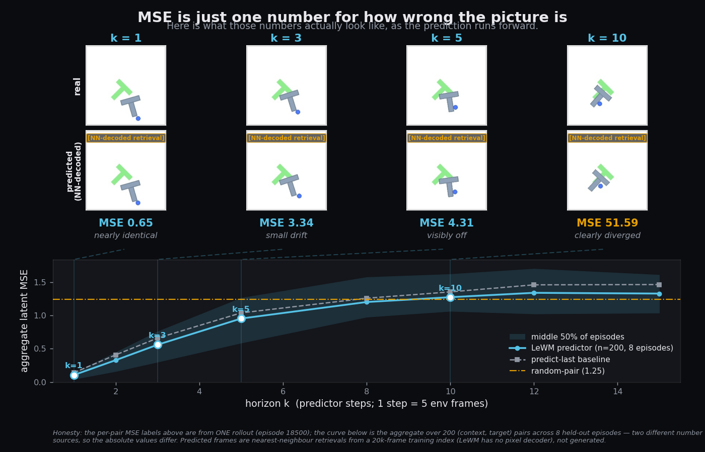
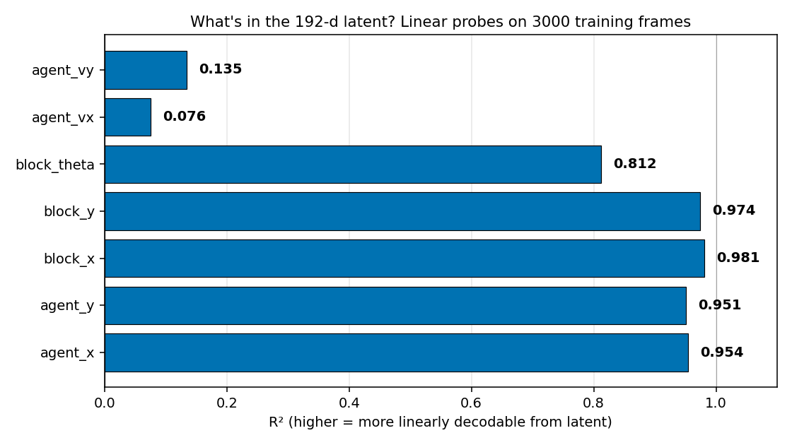

Predict the future without ever drawing it
1. Predict the future without ever drawing it
Most world models predict the next picture. This one predicts a 192-number summary of the next picture — and the crossed-out box above is the thing it deliberately doesn't have.
This is a JEPA — a Joint Embedding Predictive Architecture — meaning it predicts in the space of those number-codes (its latent space), never in pixels. Skipping the part that would redraw the image lets it spend all its effort on what changes for the task instead of repainting wallpaper it never needs to show. The catch: a model that can't draw can't show you its guess (we fix that in §4).
2. Watch one image become 192 numbers
A 224×224 photo is 150,528 numbers. The encoder squeezes each frame down to just 192 — and those 192 are the only thing the model ever thinks about.
The encoder reads one RGB frame and emits a 192-number code. The predictor reads the last few codes plus the moves taken, and outputs the next code — same 192 numbers in, same 192 numbers out. That matching shape is what lets it loop its own output back in and imagine several steps ahead.

The exact shapes
| Image in | [B, 3, 224, 224] RGB frame |
|---|---|
| Encoder out | [B, 192] one latent per frame |
| Predictor in | [B, 3, 192] last 3 latents + 3 moves |
| Predictor out | [B, 192] the next latent |
| Size | about 18 million parameters (small) |
3. How wrong does it get, and what does "wrong" look like?
A prediction far in the future drifts. Prediction error (MSE) is just one number for how wrong the picture got — watch it happen.
One step ahead, the guess is almost the real frame; ten steps ahead it has drifted to the wrong scene, and the curve below is just that drift as a single number. At the planner's working horizon the prediction is only about 8% better than the dumb baseline of assuming nothing changed: it does real work near the present and fades fast.

The numbers behind this
We unroll the predictor k steps and measure how far its predicted latent lands from the true next latent (MSE; lower is better, across all held-out samples). At the planner's working horizon (k=5) the model's MSE (0.953) is only 8.2% below the predict-last baseline (1.038). By k≈8–10 a constant "predict the average latent" baseline is actually more accurate, and by k=15 the prediction is about as far off as a random latent draw.
| Steps k | Model MSE | Predict-last | Mean-latent | vs predict-last |
|---|---|---|---|---|
| 1 | 0.104 | 0.139 | 0.485 | −25.2% |
| 2 | 0.327 | 0.407 | 0.542 | −19.6% |
| 3 | 0.559 | 0.658 | 0.589 | −15.1% |
| 5 | 0.953 | 1.038 | 0.661 | −8.2% |
| 8 | 1.201 | 1.259 | 0.703 | −4.6% |
| 10 | 1.274 | 1.354 | 0.728 | −5.9% |
| 12 | 1.340 | 1.460 | 0.764 | −8.2% |
| 15 | 1.328 | 1.464 | 0.785 | −9.3% |
4. Seeing a prediction from a model that can't draw
Since there's no decoder, we cheat: for each predicted code we look up the closest real training frame — so the bottom row is retrieved photos, never the model's drawing.
We encode thousands of training frames, and for every predicted latent we show the nearest one's original frame (NN-decode). It tracks the real frames for a few steps, then drifts on the T-block — exactly the failure the curve in §3 measured.
The model only predicts; choosing the actions is a separate job → The Planner.
5. What's actually inside the 192 numbers
Fit a straight line from the 192 numbers to each real quantity — where's the block, how fast is it moving? Tall bars are what the model "sees"; tiny ones are what it's blind to.
Block and agent position are almost perfectly readable; orientation is readable but rougher; velocity is essentially absent — a single frame can't show motion. That last gap is why the predictor takes a 3-frame history: its first implicit job is to recover speed from successive positions.

Want to browse the full geometry of the 192-number space? → Explore.